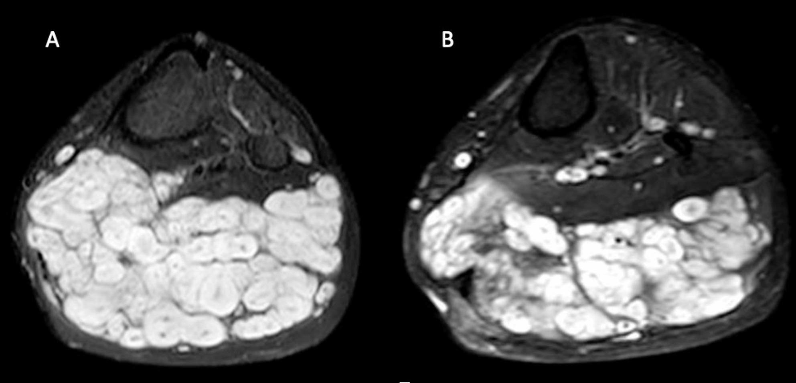
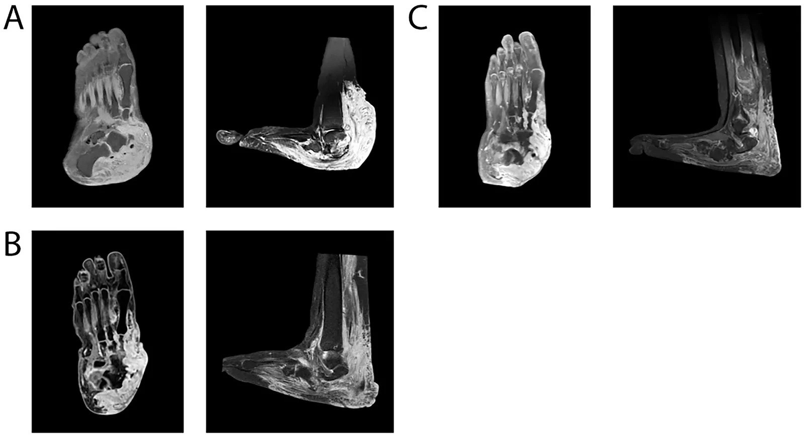

378 — Điều trị u dây thần kinh dạng đám rối ở NF1: selumetinib & theo dõi thể tích / MEK inhibition for plexiform neurofibroma
Tags: pattern:u-thanh-kinh-ngoai-vi pattern:dam-roi-thanh-kinh vung:mo-mem protocol:MRI-mo-mem protocol:MRI-the-tich score:dap-ung-the-tich
Mức chắc chắn (certainty): tổng hợp y văn (literature synthesis) — tổng hợp chuỗi ca tiến cứu 6 năm, thử nghiệm pha I/II, ca neoadjuvant và tiêu chí đáp ứng thể tích; phần quiz giữ đúng mô tả ca gốc.
1. Tổng quan bệnh học – cơ chế hình ảnh và cơ chế thuốc
1.1 Vì sao PN ở NF1 lại "ăn" vào đường RAS–MAPK
- NF1 là bệnh di truyền trội nhiễm sắc thể thường do mất chức năng neurofibromin — một GAP thúc đẩy thủy phân RAS-GTP → RAS-GDP. Khi mất neurofibromin, RAS-GTP tích lũy → RAF → MEK1/2 → ERK hoạt hóa liên tục → tăng sinh và sống sót tế bào Schwann.
- PN (plexiform neurofibroma) là u lành nhưng xâm nhập dọc toàn bộ dây thần kinh, gặp ở ~50% bệnh nhân NF1; có từ lúc sinh, tăng nhanh trong tuổi thiếu niên, đạt đỉnh trước dậy thì rồi thường chững lại sau dậy thì.
- Selumetinib là ức chế MEK1/2 đường uống, chặn dòng tín hiệu RAS–RAF–MEK–ERK → giảm phosphoryl hóa ERK → giảm tăng sinh tế bào Schwann và mô đệm. Đây là điều trị cơ chế (etiological), không phải hóa trị độc tế bào.
- TẠI SAO phải đo thể tích, không đo đường kính: PN không có hình cầu, bờ ngoằn ngoèo, lan theo nhiều khoang và bọc mạch–thần kinh; đo 3 trục sẽ bỏ sót phần u lan xa và dao động theo người đo. MRI thể tích (3D segmentation) trên STIR/T2 là chuẩn theo dõi.
1.2 Ngưỡng đáp ứng và ý nghĩa lâm sàng
- Đáp ứng một phần (partial response, PR): giảm ≥ 20% thể tích so với ban đầu.
- Bệnh ổn định (stable disease, SD): thay đổi trong khoảng −20% đến +20%.
- Tiến triển (progressive disease, PD): tăng ≥ 20% thể tích; nên xác nhận trên 2 lần MRI liên tiếp.
- Vì sao 20%: đây là ngưỡng được dùng trong các thử nghiệm selumetinib (Dombi 2016, SPRINT) và các nghiên cứu thể tích; nó cân bằng giữa sai số đo và thay đổi có ý nghĩa sinh học.
- Lợi ích lâm sàng có thể đến trước khi u nhỏ đi: bệnh nhân thường thấy u mềm hơn, bớt đau, dễ vận động sau vài tháng; trên MRI, tín hiệu STIR giảm có thể xuất hiện trước khi thể tích giảm 20%.
1.3 Hiệu quả định lượng
- Pha I (Dombi 2016): 17/24 trẻ (71%) đạt PR ≥ 20% thể tích; không có tiến triển; giảm đau và cải thiện chức năng.
- Pha II/SPRINT: khoảng 70% có giảm thể tích bền vững; hiệu quả tối đa thường sau 18–24 tháng rồi ổn định.
- Chuỗi ca 6 năm (23 bệnh nhân, theo dõi trung bình 1085 ngày): 57% giảm > 20%, 30% ổn định, 13% tăng thể tích; giảm thể tích trung vị 23%.
- Trẻ nhỏ đáp ứng nhanh hơn: ở lần đánh giá thứ 3, 56,0% trẻ < 16 tuổi đạt PR so với 18,2% thanh thiếu niên ≥ 16 tuổi (OR 5,7; 95% CI 1,02–32; p = 0,035).
2. Mẫu hình + chẩn đoán phân biệt theo tình huống điều trị (gamut)
- Câu hỏi trước khi kê thuốc: (1) PN có triệu chứng không (đau, hạn chế vận động, chèn ép đường thở/thần kinh, biến dạng)? (2) có mổ được không? (3) có dấu hiệu chuyển dạng ác không? (4) trẻ đang ở tuổi nào và có bệnh nền tim/mắt?
- Gamut theo quyết định:
- PN không triệu chứng, ổn định: theo dõi MRI định kỳ, chưa cần thuốc.
- PN có triệu chứng, không mổ được/an toàn kém: selumetinib.
- PN mổ được, không di chứng nặng: phẫu thuật (cắt bỏ/debulking); tái phát sau debulking 40–50%.
- PN "tiền mổ" quá lớn: selumetinib neoadjuvant để giảm thể tích rồi mổ.
- Nghi MPNST/ANNUBP: ưu tiên chẩn đoán mô bệnh (xem bài 377), không điều trị mù bằng MEK inhibitor.
- Thất bại/không dung nạp selumetinib: thử mirdametinib, trametinib, hoặc thuốc thử nghiệm (cabozantinib, abemaciclib) — bằng chứng còn hạn chế.
- Mnemonic "SURGERY hay SELUMETINIB": Symptomatic? Unresectable? Rapid growth? Genetic NF1? Efficacy expected? Risk of MPNST? Young age? — nếu Symptomatic + Unresectable + không nghi MPNST → selumetinib.
3. Bảng so sánh phân biệt (ma trận đối chiếu)
| Thực thể / chiến lược | Hình ảnh – lâm sàng điển hình | Chốt vào (rule-in) | Chốt loại (rule-out) | Gợi ý xác nhận |
|---|---|---|---|---|
| PN lành có triệu chứng, không mổ được | Khối dọc dây thần kinh, nhiều dấu bia T2, tăng thể tích theo tuổi, đau/hạn chế vận động | NF1 + PN + triệu chứng + không mổ an toàn | Có nốt mới/không đồng nhất/phù quanh u → nghi chuyển dạng | MRI thể tích + đánh giá chức năng; selumetinib 25 mg/m² × 2/ngày |
| PN mổ được | Tổn thương khu trú, bờ tương đối rõ, không xâm nhập mạch–thần kinh quan trọng | Mổ lấy được mà không mất chức năng | Lan rộng, bọc mạch–thần kinh, nguy cơ mất chức năng → không mổ | CT/MRI + hội chẩn ngoại; tái phát 40–50% sau debulking |
| PN không triệu chứng, ổn định | U đồng nhất, không nốt mới, thể tích thay đổi < 20%/năm | Không đau, không chèn ép, không tiến triển | Tăng nhanh/đau mới → không còn "theo dõi đơn thuần" | MRI mỗi 6–12 tháng; WB-MRI nếu nhiều u |
| ANNUBP/MPNST | Nốt mới trong u cũ, T1 không đồng nhất, ngấm ngoại vi, phù quanh u, ADC thấp, FDG cao | Nốt mới + không đồng nhất + ADC thấp/SUVmax cao | Target sign rõ + ADC cao + SUVmax thấp → ít nghĩ ác (không loại trừ) | Sinh thiết/mô bệnh; xem bài 377 |
| Selumetinib neoadjuvant | PN lớn, mổ được nhưng nguy cơ cao; giảm thể tích sau 9–12 tháng | PN chuyển từ không mổ được → mổ được | U không giảm sau 12 tháng → xem lại chẩn đoán/liệu pháp | MRI thể tích trước–sau; phối hợp ngoại–ung thư |
| Thuốc MEK khác / thử nghiệm | Mirdametinib, trametinib, cabozantinib, abemaciclib | Thất bại/không dung nạp selumetinib | Chưa có chỉ định chuẩn → chỉ trong thử nghiệm | Theo dõi thể tích + độc tính |

Trái (A): trước điều trị — khối đa thùy T2 rất sáng, nhiều "dấu bia" trong cơ cẳng chân. Phải (B): sau 8 tháng selumetinib — khối nhỏ hơn và tín hiệu giảm. Nguồn: Baldo F et al., BMC Pediatr 2026 (PMC13474747), Fig. 2, CC BY-NC-ND 4.0 — giữ nguyên, không cắt/ghép.4. Protocol theo dõi + tiêu chí đáp ứng
4.1 Chụp và đo thể tích
- Baseline: MRI toàn vùng tổn thương, STIR hoặc T2 fat-sat, lát 3–4 mm, cùng máy/cùng chuỗi cho mọi lần sau; chụp toàn bộ u (không chỉ một mặt cắt).
- Phân đoạn thể tích (3D segmentation): vẽ thủ công/bán tự động trên từng lát, cộng thể tích; ghi rõ chuỗi xung và người đo.
- Theo dõi: 3–4 tháng/lần trong năm đầu, sau đó 6 tháng/lần khi ổn định; WB-MRI nếu nhiều PN hoặc đánh giá gánh nặng u.
- Không dùng RECIST đường kính làm tiêu chí chính cho PN — thể tích là chuẩn; RECIST có thể dùng bổ sung cho tổn thương dạng khối.
4.2 Liều và theo dõi an toàn
- Selumetinib: 25 mg/m² × 2 lần/ngày (uống, cách xa bữa ăn theo nhãn); giảm liều 20 mg/m² × 2 lần/ngày khi độc tính; ngừng tạm nếu độc tính nặng.
- Trước điều trị: CBC, chức năng gan–thận, CPK, lipid, HbA1c/đường huyết, siêu âm tim (LVEF), khám mắt (đáy mắt, thị lực), đánh giá tăng trưởng/dậy thì.
- Trong điều trị: lặp lại CPK, men gan, công thức máu định kỳ; siêu âm tim mỗi 3–6 tháng; khám da (acneiform rash, paronychia), mắt (mờ, đau), tiêu hóa (tiêu chảy).
- Ngừng thuốc: khi tiến triển, độc tính không chấp nhận, hoặc sau mổ ổn định — nhưng có thể tái phát sau ngừng, cần theo dõi tiếp.
4.3 Luồng quyết định
flowchart TD
A[Trẻ NF1 có PN] --> B{Có triệu chứng hoặc biến dạng?}
B -->|Không| C[Theo dõi MRI 6-12 tháng]
B -->|Có| D{Mổ được an toàn?}
D -->|Có| E[Phẫu thuật hoặc debulking]
D -->|Không| F{Có dấu hiệu nghi MPNST?}
F -->|Có| G[Sinh thiết và mô bệnh]
F -->|Không| H[Selumetinib 25 mg/m2 x 2/ngày]
H --> I[MRI thể tích 3-4 tháng/lần]
I --> J{Giảm ≥ 20%?}
J -->|Có| K[Tiếp tục, theo dõi độc tính]
J -->|Không sau 12 tháng| L[Xem lại chẩn đoán, thử thuốc khác]
K --> M{Có thể mổ?}
M -->|Có| N[Neoadjuvant rồi mổ]
5. Biến thể bình thường và cạm bẫy
- U mềm hơn/tín hiệu giảm trước khi thể tích giảm: đừng đổi thuốc quá sớm; đánh giá lại sau 6–12 tháng nếu lâm sàng cải thiện.
- Tăng CPK không triệu chứng rất thường gặp (96%): không ngừng thuốc chỉ vì CPK cao; kiểm tra triệu chứng đau cơ, nước tiểu sẫm màu, và loại trừ vận động mạnh.
- Acneiform rash gặp ở 65%, paronychia 91%, khô da/eczema 57% — chủ yếu điều trị hỗ trợ; hiếm khi phải ngừng.
- Độc tính tim–mắt: giảm LVEF và bệnh võng mạc huyết thanh (RPED) là biến chứng nặng dù hiếm; khám mắt định kỳ và siêu âm tim.
- Tái phát sau ngừng thuốc: ca neoadjuvant cho thấy u mọc lại sau khi ngừng 3 năm; cần theo dõi dài hạn và khởi động lại nếu cần.
- Nhầm PN với MPNST: u to nhanh, đau mới, nốt mới trong u, không đồng nhất → không tăng liều selumetinib, phải chẩn đoán mô bệnh (bài 377).
- Sai số thể tích: khác chuỗi xung, khác lát cắt, hoặc đo cả mô lành quanh u → sai lệch > 20% giả; luôn so sánh trên cùng chuỗi.
- Tương tác thuốc: selumetinib chuyển hóa qua CYP3A4 — thận trọng với azole kháng nấm, rifampicin, một số thuốc chống động kinh.
6. Tự lượng giá — Blind Quiz
Ca 1 — Bé trai 13 tuổi NF1, khối cẳng chân to dần, đau khi đi lại.
- Gợi ý lâm sàng: PN cẳng chân đã biết, không mổ được vì lan rộng; đau tăng, hạn chế vận động.
- Câu hỏi: Mô tả tín hiệu và cấu trúc khối? Tiêu chí đáp ứng với selumetinib? Kết quả hình ảnh này gợi ý gì?
Bấm để hiện đáp án (findings + chẩn đoán)
- Dấu hiệu: khối đa thùy, T2 rất sáng, nhiều dấu bia (target sign) — lõi xơ tối + viền myxoid sáng; sau 8 tháng selumetinib khối nhỏ hơn, tín hiệu giảm.
- Chẩn đoán: PN lành ở NF1; đáp ứng được định nghĩa là giảm ≥ 20% thể tích trên MRI thể tích, ổn định là −20% đến +20%, tiến triển là tăng ≥ 20%.
- Kết quả: phù hợp với dữ liệu chuỗi ca — 57% giảm > 20%, giảm trung vị 23%; lợi ích lâm sàng (giảm đau) có thể xuất hiện trước khi thể tích giảm.
- Nguồn ảnh: Baldo F et al., BMC Pediatr 2026 (PMC13474747), Fig. 2, CC BY-NC-ND 4.0.
Ca 2 — Bé gái 13 tuổi NF1, PN bàn chân từ nhỏ, không mổ được vì nguy cơ chảy máu và mất chức năng.

- Gợi ý lâm sàng: u xâm nhập khớp sên–gót, biến dạng bàn chân, không đi giày thường được.
- Câu hỏi: Vai trò của selumetinib ở đây? Sau mổ có nên ngừng thuốc ngay? Biến chứng cần theo dõi?
Bấm để hiện đáp án (findings + chẩn đoán)
- Dấu hiệu: PN lớn xâm nhập mô mềm và xương bàn chân; sau 12 tháng selumetinib thể tích giảm đủ để mổ cắt u + tái tạo chỉnh hình.
- Vai trò: neoadjuvant — chuyển u từ không mổ được → mổ được, giảm nguy cơ chảy máu và mất chức năng.
- Sau mổ: ca gốc ngừng selumetinib 3 năm sau mổ để đánh giá ổn định, nhưng u mọc lại và phải dùng lại — cần theo dõi dài hạn, không mặc định "mổ xong là khỏi".
- Theo dõi: CPK, men gan, siêu âm tim, khám mắt, da/paronychia, tăng trưởng–dậy thì.
- Nguồn ảnh: Front Pediatr 2026 (PMC13574963), Fig. 2, CC BY 4.0.
Ca 3 — Trẻ 8 tuổi đang selumetinib 4 tháng, xét nghiệm CPK 1.126 U/L, không đau cơ, nước tiểu bình thường.
- Gợi ý lâm sàng: không sốt, không vận động mạnh, không dùng statin; da có mụn mủ nhẹ và móng viêm.
- Câu hỏi: Xử trí CPK tăng đơn độc? Khi nào phải ngừng thuốc? Cần hỏi thêm gì?
Bấm để hiện đáp án (findings + chẩn đoán)
- Nhận định: tăng CPK không triệu chứng là độc tính thường gặp nhất (96% trong chuỗi ca); giá trị cao nhất ghi nhận 1.126 U/L (bình thường 60–190 U/L), thường tăng trong những tháng đầu và trở về bình thường trong tối đa 2 năm.
- Xử trí: hỏi đau cơ, yếu cơ, nước tiểu sẫm màu, loại trừ vận động mạnh/chấn thương; nếu không triệu chứng → tiếp tục thuốc + theo dõi, không giảm liều máy móc.
- Ngừng/giảm liều khi: đau cơ kèm CPK tăng cao, rhabdomyolysis, hoặc CPK tăng kèm suy thận; đồng thời xử lý paronychia/acne tại chỗ.
- Nguồn số liệu: Baldo F et al., BMC Pediatr 2026 (PMC13474747), Bảng 4; không dùng ảnh cho ca này.
Bài liên quan chéo
- 377 – U dây thần kinh dạng đám rối & chuyển dạng MPNST ở NF1: chẩn đoán, WB-MRI, ADC, FDG-PET
- 300 – Tổng quan Hệ Cơ – Xương – Khớp
- 376 – U phần mềm KHÔNG mỡ: schwannoma vs sarcoma myxoid
- 375 – U phần mềm nhóm mỡ: lipoma vs WDLPS
Không dùng để chẩn đoán độc lập khi chưa có người hướng dẫn.